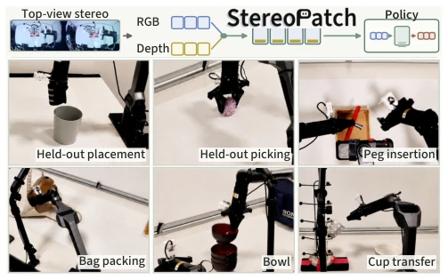
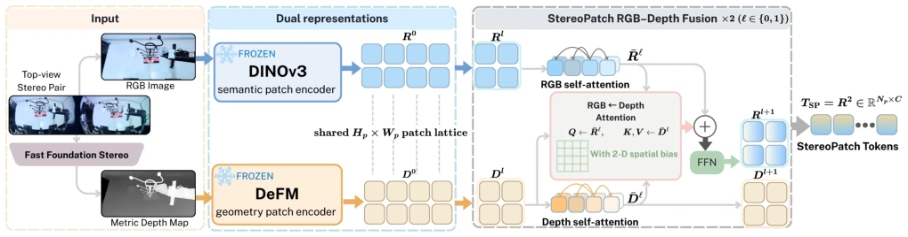
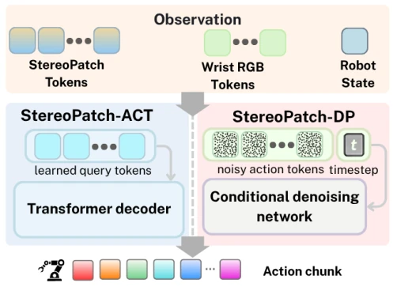
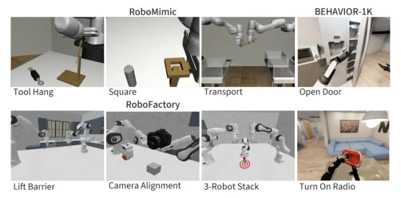
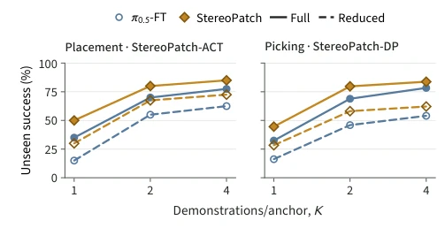
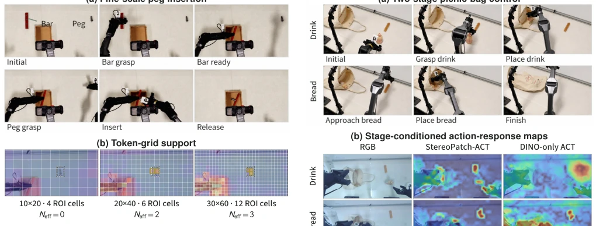
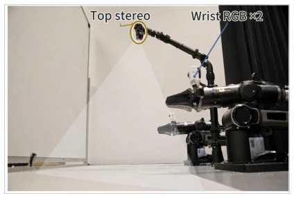
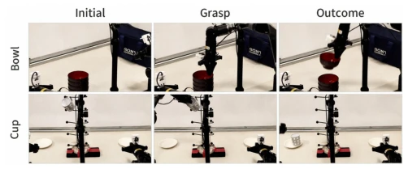
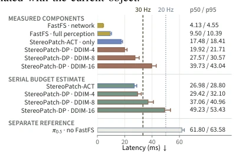

This StereoPatch adds a "depth patch" to visual imitation learning. The authors keenly point out that relying solely on RGB features easily leads to "face blindness," where geometric differences are ignored, causing action prediction errors. They forcefully integrate depth features into RGB Patches, aligning them via cross-attention, usable without modifying the policy architecture. The results are indeed stronger than simple concatenation or single modality, especially in generalization and contact control. But frankly, it still relies on stacking pre-trained models, not solving the fundamental "understanding" problem, just making the policy easier to "see" distance. For engineering deployment, this fusion scheme that doesn't change the policy architecture is quite attractive, but inference latency needs to be evaluated by oneself, after all, there is an extra layer of attention mechanism, and depth quality depends on sensor configuration.
Visual imitation learning (such as ACT [3] and Diffusion Policy [4]) relies on visual encoders to extract features, but RGB features often ignore geometric differences. Similar appearances may correspond to different actions (e.g., grasp height), leading to state confusion. Existing methods like StereoPolicy [24] introduce stereo vision, but the policy still needs to learn RGB-depth correspondence from limited demonstrations. Simply adding the depth modality cannot directly resolve ambiguity, because the policy must relearn the correspondence, which is particularly difficult when data is scarce. StereoPatch aims to bind registered metric geometry directly to the RGB Patches used for action prediction, solving spatial perception issues before decoding, avoiding the policy learning correspondence from scratch, and improving spatial generalization capabilities, especially for unseen positions and targets.

Fig. 1. Spatial demands in robot learning. Six real-robot tasks test position generalization, contact height, fine-scale and multi-stage control.
The overall process is divided into feature encoding, alignment fusion, and policy decoding. First, a frozen DINOv3 [1] encodes RGB appearance, DeFM [2] encodes registered metric depth, both mapped to a shared 2D Patch grid (e.g., 20x40). The key innovation lies in "asymmetric cross-attention": RGB Tokens act as Query to retrieve geometric evidence from Depth Tokens (Key/Value), while retaining the RGB Patch address. This avoids hard one-to-one matching, allowing selection of nearby or distant depth information based on content, and introduces relative position encoding to enhance spatial priors. The fused StereoPatch Tokens are concatenated with wrist camera observations and robot states, input into ACT or Diffusion Policy. Pre-trained encoders remain frozen, only the fusion module and policy are trained, requiring no extra correspondence labels or auxiliary losses, ensuring compatibility with original imitation learning goals and achieving end-to-end optimization. The depth branch is updated only via self-attention, not output directly, but acts as an internal evidence field, ensuring each output Token retains the RGB Patch address and carries geometric information.

Fig. 2. StereoPatch token construction. Frozen DINOv3 and DeFM provide RGB and metric-depth features on a shared patch grid. Two asymmetric fusion blocks retrieve contextual geometry into RGB-indexed tokens, preserving their patch addresses for action prediction.

Fig. 3. Policy integration. StereoPatch tokens, wrist RGB, and robot state condition ACT or DP to predict action chunks under their original objectives.
Evaluated on simulations such as RoboMimic, RoboFactory, and 6 real robot tasks. Baselines include RGB-only, Geometry-only, Late concat, Patch MLP, and StereoPolicy [24]. The metric is closed-loop success rate. StereoPatch significantly improves on spatial generalization (held-out positions), e.g., placement task ACT improves by 25%. In metric contact tasks (e.g., bowl extraction), it reduces erroneous grasps (too high/too low). Ablation shows Patch MLP is effective, but cross-attention provides further gains. Inference tests show it can maintain 30Hz on RTX 5090, but depth generation method (stereo vs device) affects performance. Grid resolution is not finer better, needs task adaptation, e.g., Peg Insertion task performs best at intermediate grid. Additionally, in multi-stage tasks (e.g., picnic pack packing), StereoPatch also shows advantages in subsequent grasp stages, proving fused information helps long-range dependencies.

Fig. 4. Simulation tasks. RoboMimic, RoboFactory, and BEHAVIOR-1K cover tabletop, multi-robot, and mobile manipulation, respectively.

Fig. 7. Demonstration efficiency. Held-out success versus trajectories per anchor, with varied training coverage and fixed evaluation positions.

Fig. 11. Fine-scale insertion. (a) Task sequence. (b) Small-target support across three patch grids; maps are independently normalized. TABLE V: Peg-insertion success across patch grids with DP: cumulative grasp and task success over 72 trials per condition.
其他图片Other Figures

Fig. 5. Robot sensing. Top-view stereo provides RGB and depth; wrist RGB also conditions the policy. External views support scoring.

Fig. 8. Metric contact tasks. Bowl extraction varies contact height; cup transfer requires three-dimensional reaching across rack configurations.

Fig. 13. Inference time. Component p50/p95 measurements and their serial sums on an RTX 5090; sums estimate the inference budget.